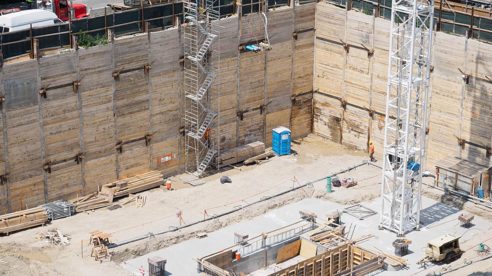
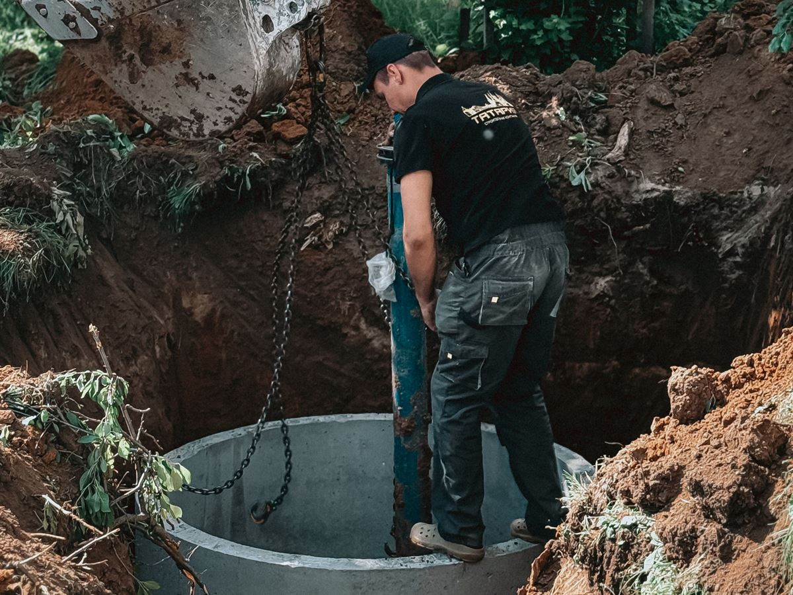

Pump Stations
New construction and rehabilitation for water and wastewater systems.
PUMP STATION CONSTRUCTION
Complex systems.
Careful execution.
Etowah Construction Group builds and rehabilitates water and sewage pump stations — from bypass pumping and demolition through wet wells, pumps, process piping, and electrical equipment.
-
New Construction
New pump stations, wet wells, pumps, and process piping.
-
Rehabilitation
Demolition of existing equipment, wet well rehabilitation, and new pumps.
-
Bypass Pumping
Temporary bypass operations that keep systems running during construction.
OUR SCOPE
Every component. One accountable team.
Wet Wells
Deep specialty excavation, wet well construction, and rehabilitation.
Pumps & Process Piping
Pumps, interior station piping, and large-diameter ductile iron.
Electrical Equipment
Installation of pump station electrical equipment.

DEEP EXCAVATION
Built for depth and difficulty.
- Specialty excavation up to 35 feet
- Bypass pumping operations
- Utility tie-ins within public roadways
Pump station work for the City of Chattanooga and the Bartow County Water Department — from complete rebuilds to station rehabilitation.
Explore Underground UtilitiesPUMP STATION EXPERIENCE
Proven in the field.

Sewage Pump Station Rebuild
Complete demolition and reconstruction with a 35-foot specialty excavation for a new wet well.

Sewage Pump Station Rehabilitation
Bypass pumping, equipment demolition, wet well rehabilitation, and new pumps.

Water Pump Station
24-inch restrained-joint ductile iron, station piping and pumps, with excavation to 25 feet.